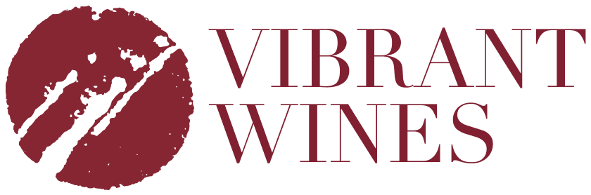
One of Champagne's most exciting new voices. Launched in 2022 on steep, south-facing family parcels in the Côte des Bar, Antoine Berthelot brings rare precision to micro-production winemaking. Trained across Gevrey, Corsica and Les Riceys, his approach is uncompromising: no mechanisation, native yeasts, used oak, zero fining or filtration. Each parcel vinified separately. The result — Champagnes of striking purity, tension and personality, hand-crafted from the ground up.
His debut releases already show remarkable elegance and personality. A rising talent to watch.
| Cuvée | Tasting Note | Price |
|---|---|---|
| Assemblage N°1 – Vintage 2023, Brut NatureChardonnay / Pinot Noir | Aged 10 months on lees in 228–500L oak barrels before tirage, then 16 months in bottle. A striking balance of power, finesse and salinity. 56% Chardonnay, 44% Pinot Noir. Unfined, unfiltered. Hand-disgorged (“à la Volée”), zero dosage. 3,342 bottles. | 89 |
| La Grande Vigne – Vintage 2023, Brut NaturePinot Noir | 100% Pinot Noir from the single plot “La Grande Vigne.” The standout barrel — a 500L demi-muid — selected for this limited cuvée. Unfined, unfiltered, hand-disgorged with zero dosage. Stunning. 750 bottles. | 106 |
| Coteaux Champenois Rosé 2023Pinot Noir | One standout barrel of Pinot Noir, rich and opulent. Aged 24 months in a 228L barrel, lifted with a touch of press juice for freshness and length. Aromatic, floral, textural. Bottled August 2025. 304 bottles. | 93 |
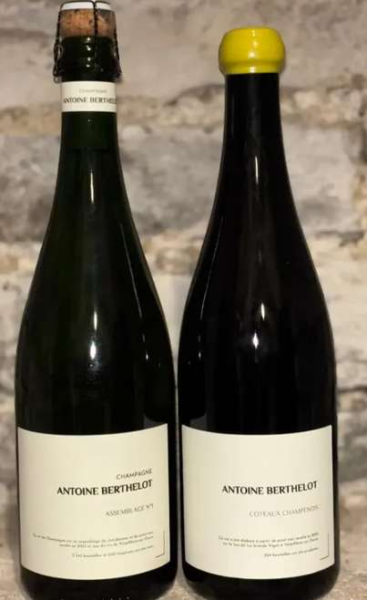
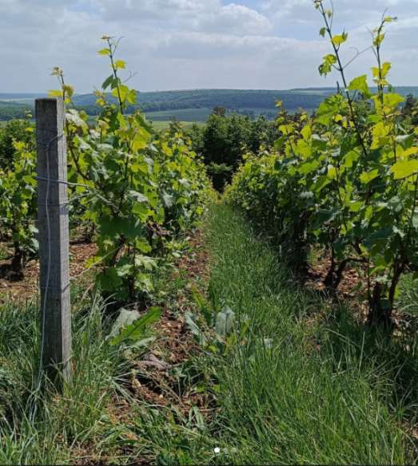
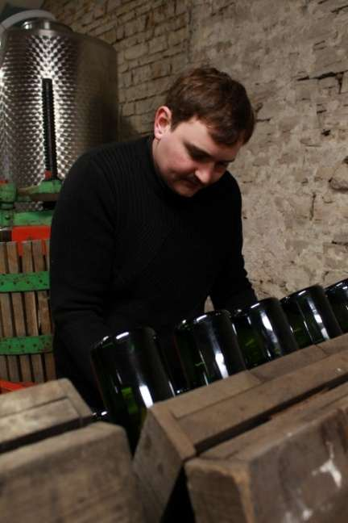
Based in Rouvres-les-Vignes (Aube, Côte des Bar), Jonathan comes from a family of growers who always sold their fruit. Trained in Beaune and shaped by top estates, everything shifted when he discovered zero-sulphur winemaking. Today he farms just two parcels: 0.6ha Pinot Noir in Bar-sur-Aube (organic), and 0.25ha Chardonnay in Rouvres-les-Vignes, a true experimental playground (high-trained vines, no trimming, no soil work, grazing animals…). In a region still bound by convention, Jonathan stands apart. In the cellar: total non-intervention.
A future big name. First Champagnes expected around 2028. Quantity very limited.
| Cuvée | Tasting Note | Price |
|---|---|---|
| Coteaux Champenois “Le Château d'Eau” Blanc 2024Chardonnay | 100% Chardonnay from the single plot which is Jonathan's experimental field. Vinified and aged in a single 350L Burgundy barrel without any intrant. Harvested 20 Sept 2024, bottled by hand 10 Dec 2025. One barrel only — 450 bottles. | 105 |
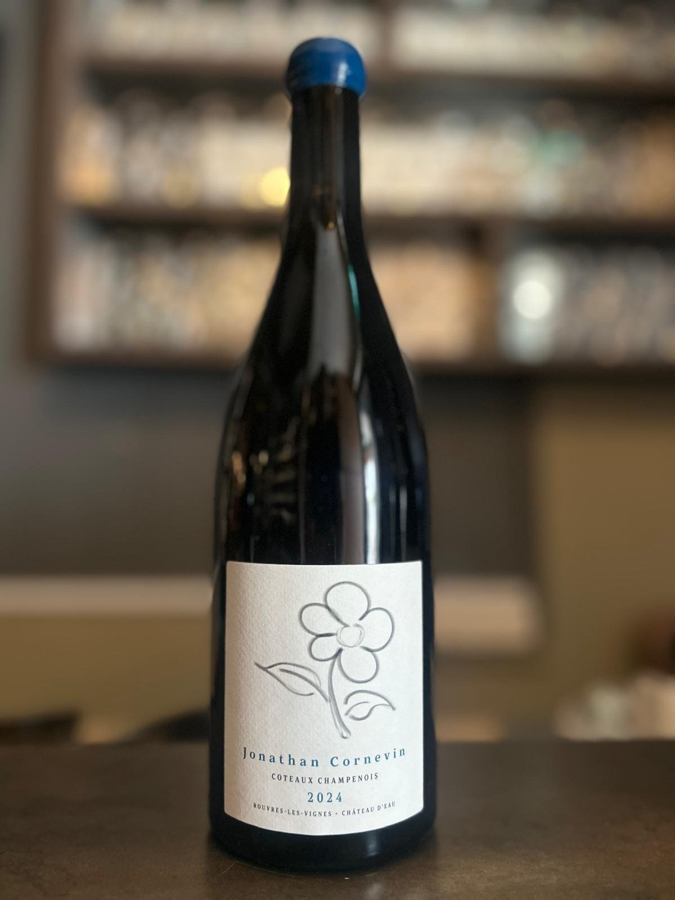
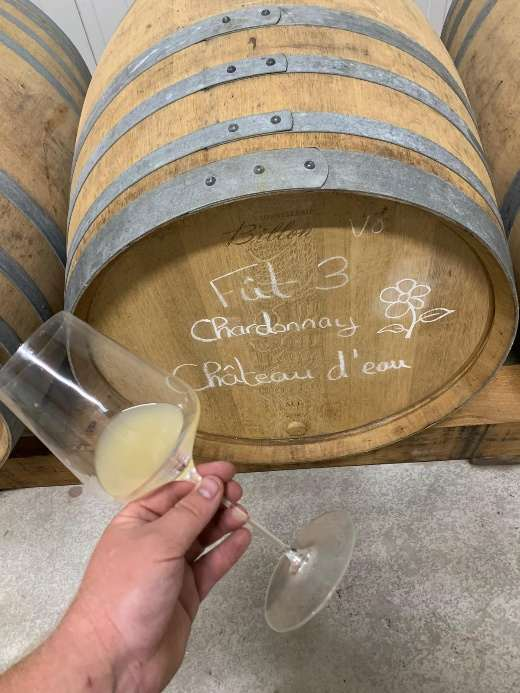
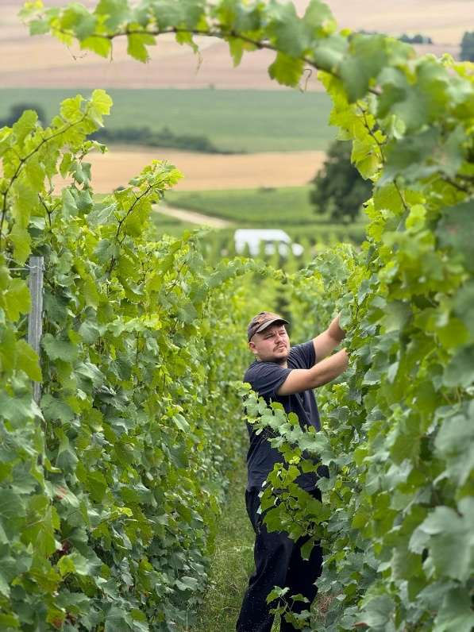
Started at 18. One hectare. One village. One grape. Alexandre Grimée is the purist's purist — crafting some of Champagne's most riveting single-vineyard Pinot Meunier from a tiny 0.6ha parcel in Bonneil planted by his grandparents in 1973. Fifty-year-old vines on steep calcareous clay, certified organic, worked entirely alone. No blending, no fixed recipe — just instinct, restraint and obsessive precision. Rare, sought-after, and absolutely uncompromised.
One plot, one grape, one village, one vintage. Alexandre Grimée crafts some of Champagne’s most distinctive expressions of Pinot Meunier from just a handful of old vines in Bonneil.
| Cuvée | Tasting Note | Price |
|---|---|---|
| Champagne Lieu-Dit “Sous les Trous” 2022, Brut NaturePinot Meunier | Aged over 30 months on lees — striking freshness, tension and mineral drive. White fruit, dried flowers and fresh almond, underpinned by a chalky edge from calcareous soils. Vibrant, vertical and saline with a clean, persistent finish. Unfined, unfiltered, zero dosage. Very little sulfur (20mg total) — 2,700 bottles. | 117 |
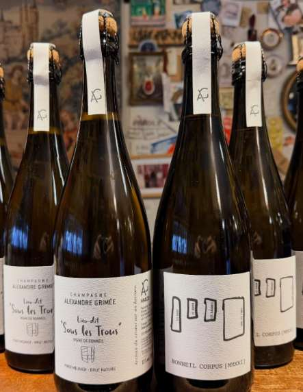
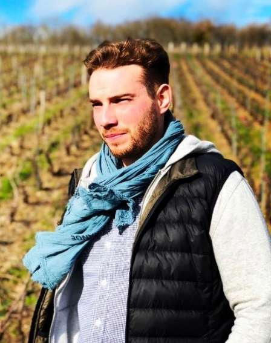
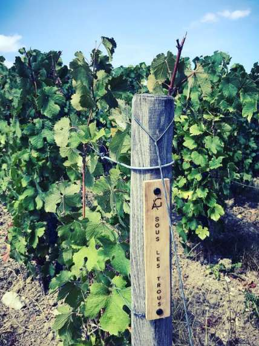
Born in 2023, Domaine du Triptyque is Chablis' most exciting new organic estate. Tommy Chevallier spent six years building his vision before releasing a single bottle — and it shows. Just 5.5 hectares farmed with obsessive care, pioneer resistant varieties, a stunning bio-sourced cellar, artist-designed labels. Nature, wine and art in perfect harmony. In the cellar: native fermentations, gentle élevage, zero compromise.
A new generation of Chablis: vibrant, saline, energetic wines with tension, authenticity and a strong sense of place.
| Cuvée | Tasting Note | Price |
|---|---|---|
| Petit Chablis 2024Chardonnay | From plots planted between 1990 and 2000 in Beine and Chablis. Freshness and tonic structure. Aged on lees for 11 months in 7-year-old barrels, then 4 months in stainless steel. Not fined. Organic. | 59 |
| Chablis 2023/2024Chardonnay | Parcels in Beine and Courgis combine into a chiselled cuvée of tension, salinity and generosity, with depth and precision. Aged 11 months in concrete and 4 months in stainless steel. Not fined. Organic. | 63 |
| Chablis “Rosette” 2024Chardonnay | A small parcel in Courgis next to Premier Cru Beauregard, on clay over Kimmeridgian limestone. 35-year-old vines, native fermentations, 90% concrete / 10% oak, minimal intervention, no fining. Vibrant, saline and precise with freshness and persistence. | 67 |
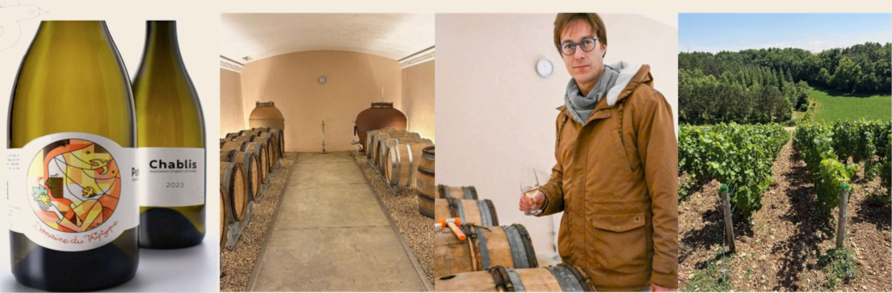
Thomas Tixier is part of the exciting new wave redefining Chablis. Based in Courgis — the organic stronghold of the region and home to growers like Alice De Moor, Olivier De Moor and Thomas Pico — Thomas crafts vibrant, terroir-driven wines with a deep commitment to organic farming and minimal intervention. Trained in Beaune and Dijon, Thomas first worked at the family estate before early exposure to the low-intervention philosophy of De Moor shaped his vision. In 2022 he launched his own project, focusing on just 4 hectares farmed organically. Key parcels include Grosse Terre, planted in the 1970s on marl and limestone, and Corvée, an old massal-selection vineyard planted in the 1980s. In the cellar: spontaneous fermentations, old oak barrels, no fining, no filtration, only tiny additions of sulphur when necessary.
Chiseled, energetic, deeply authentic Chablis that firmly places Thomas Tixier among the most promising new names of the region.
| Cuvée | Tasting Note | Price |
|---|---|---|
| Chablis “Lacryma Vinea” 2024Chardonnay | Due to the 2024 frost, this is the only cuvée produced by Thomas: a naked, vibrant Chardonnay, unfiltered and slightly cloudy. Acidity strikes like an electric shock — taut, saline, bursting with energy yet carried by a fleshy, thirst-quenching core. Chablis at its wildest. 3 barrels produced. | 77 |
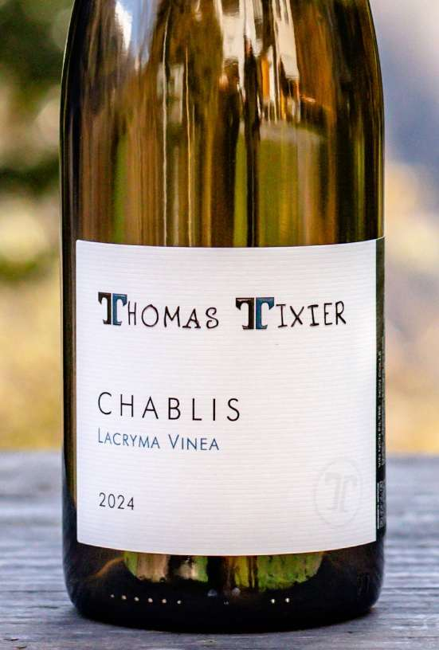
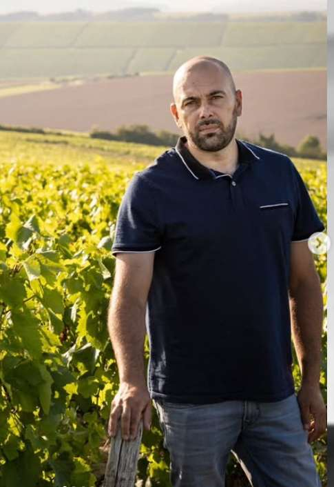
For many, Raveneau and Dauvissat define benchmark Chablis. Through his marriage into the Dauvissat family and hands-on mentorship, Laurent Tribut emerged too without any doubt. Today, alongside his daughter, he farms 5 hectares largely drawn from Dauvissat family holdings, initially vinified at the domaine under René and Vincent’s guidance.
William Kelley: “Organic grapes, moderate yields, hand-harvesting at full maturity, fermentation in stainless steel tanks, followed by ageing on the lees in used oak : this way will be familiar to followers of Vincent Dauvissat’s wines and it remains unchanged. Domaine Tribut continues to stand as a reference for classic, artisanal Chablis. In short, readers can buy with confidence across the range, which comprises just four wines under the Domaine Tribut label.”
Authenticity over fashion. Tribut-Dauvissat remains one of Chablis’ quiet legends, producing wines of exceptional precision, tension and longevity.
| Cuvée | Tasting Note | Price |
|---|---|---|
| Chablis 2023White | Outstanding value. Poached pear and apple compote meet iodine, lemon zest and a touch of brine. Succulent, round, and sapid, with mid-weight depth and impressive persistence. Clean, citrus-driven, nicely dry finish. Punches well above its weight. | 73 |
| Chablis 1er Cru “Beauroy” 2023White | A well-defined bouquet of red apple, pear and light crushed stone. Fresh and vibrant, well above other Beauroy makers in complexity and raciness, with spiciness on the finish. | 98 |
| Chablis 1er Cru “Côte de Léchet” 2023White | Exotic lift of lychee and passion fruit, layered with iodine, seaweed, florals and lemongrass. Rich, even opulent yet precise, generous but refined. Open, lush and expressive. | 98 |
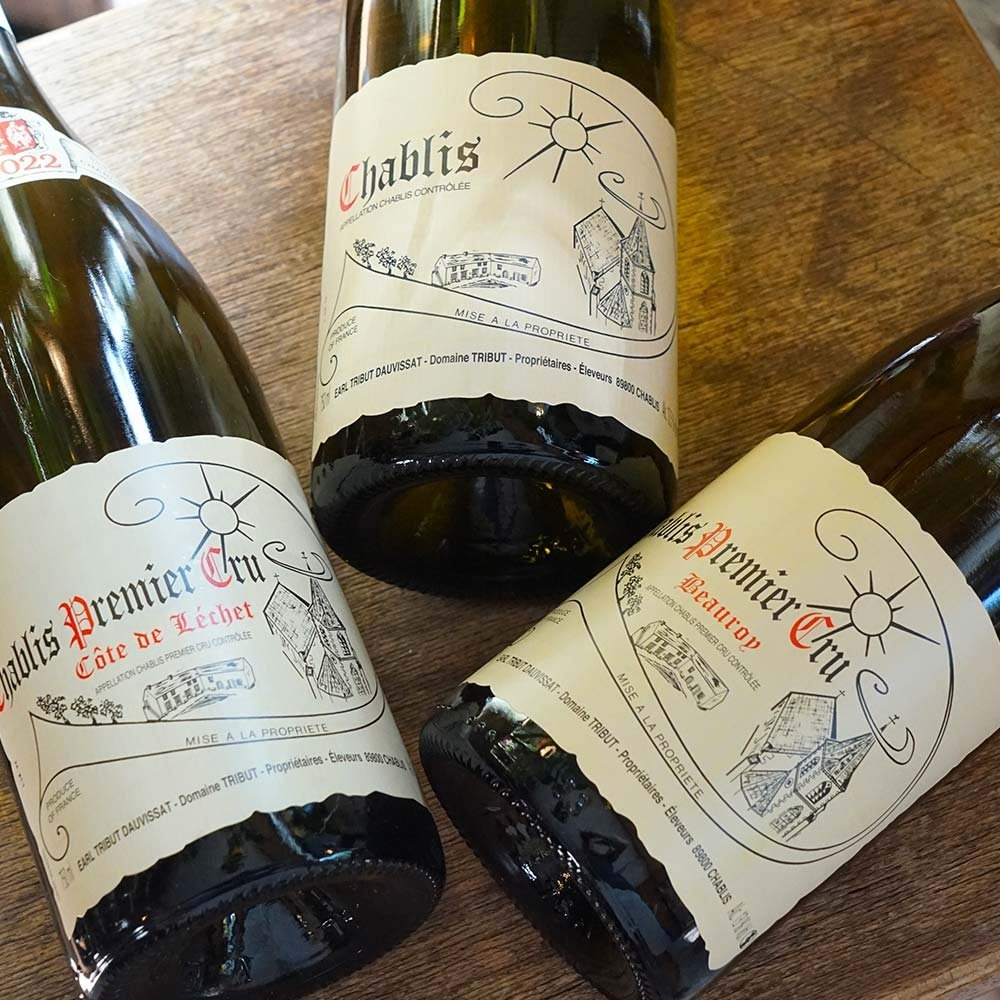
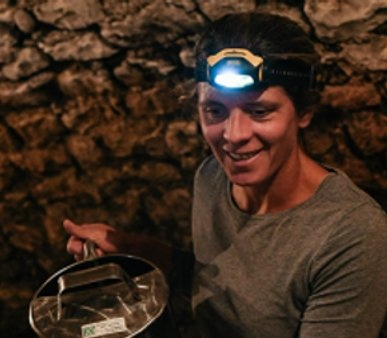
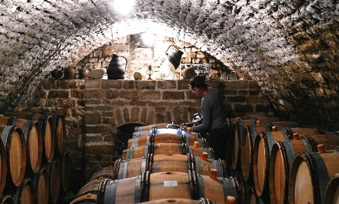
Not born in Burgundy, yet already one of its most talked-about rising talents. Nicolas Protin, from Lorraine, trained at Comte Armand before refining his craft in Australia and New Zealand. Back in Beaune, he built a strong reputation as a sought-after vineyard contractor, trusted by top estates. In 2020 he began vinifying fruit from the very vines he farms — tiny “garage wines” that quickly gained cult attention. By 2022, Maison Aymon was born. Ultra-limited (10–15 barrels/year), yet far from a typical micro-négociant: full control from vineyard to cellar. Pure, minimalist, no-compromise — gravity flow, no pumps, minimal sulfur, no new oak for whites, max 20% for reds. Deliberately short ageing (~10 months) to keep a pure, bright and juicy fruit profile. Whites: whole-bunch press, fine lees, no bâtonnage. Reds: 100% whole cluster, fully manual, no filtration, no fining, native yeasts only.
Tiny volumes, total control. Absolute purity on this 2024 vintage, surpassing by far all previous vintages. Quantity very limited.
| Cuvée | Tasting Note | Price |
|---|---|---|
| Bourgogne Aligoté 2024White | Grapes from Couchois aged in ceramic & stainless. Zesty, razor-sharp, with a beautiful texture preserving varietal aromatics — stone fruits, lime. Already delicious. 2 barrels / year. | 74 |
| Bourgogne Chardonnay 2024White | Grapes from Hautes-Côtes de Beaune. Crispy, layered, full of lemon and orchard fruits, very little sulfur. Gorgeous. 2 barrels / year. | 77 |
| Hautes-Côtes de Beaune 2024Red | Pure fruit juice, full of raspberry, sweet spices and blackcurrant. Sweet tannins, whole-cluster style, lively and highly drinkable. 2 barrels / year. | 91 |
| Gevrey-Chambertin “En Champs” 2024Red | A beauty with notes of sweet cherry, blackcurrant, incense and rose petals. Refined tannins, vibrant freshness and a long, subtly spicy finish. | 155 |
| Pommard 1er Cru 2024Red | From a top plot in Pommard. Impressive intensity and depth. | 199 |
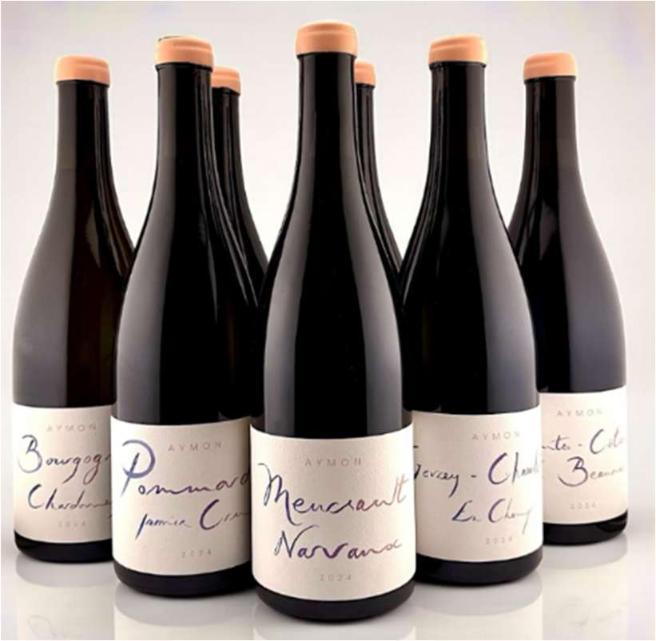
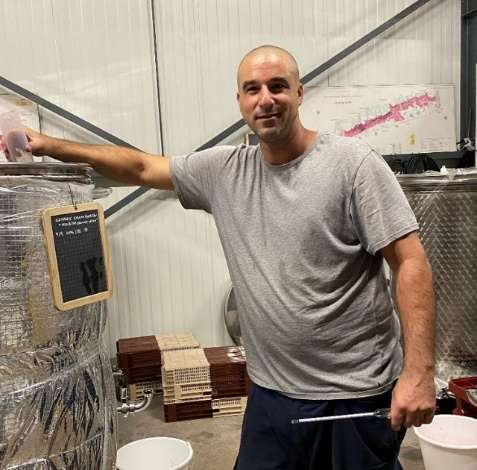
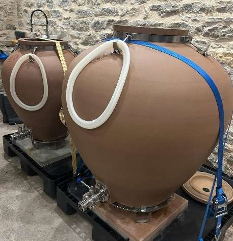
Imported for the first time in Singapore: a new organic estate based in Beaune. Total production: 2,000 bottles/year — Chardonnay aged 18 months in oak, on lees. The wine style shows on-lees reduction (struck match, straw, gunflint) underlined by a natural acidity from a high-altitude plot.
As a newborn estate, Marie & Christophe made bold choices from their very first vintage — organic farming, tiny yields and long ageing — decisions that command real respect. Their single cuvée sits well above the usual Côte de Beaune standard, shaped by a finely controlled reductive style that many discerning drinkers actively seek out.
| Cuvée | Tasting Note | Price |
|---|---|---|
| Côte de Beaune “Les Monsnières” 2023White (Chardonnay) | Hillside plot above Beaune. First vintage, basket pressed, fermentation and ageing in barrel for 18 months before hand bottling. Enveloping and suave palate with sweet orchard fruit, apple blossom, fresh bread and baking spice. (RP: 92 pts) | 120 |
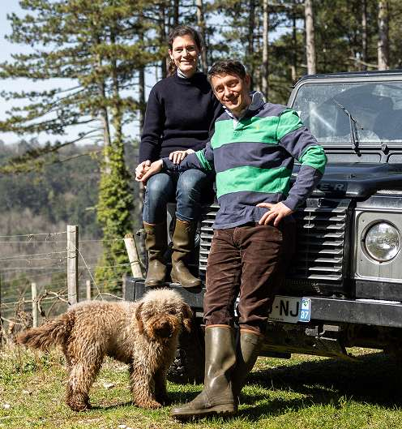
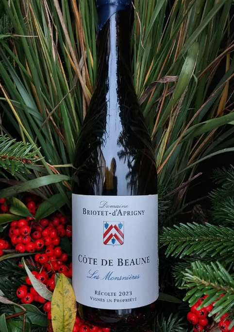
A family micro-estate of just 1.6ha (organic) created in Meursault in 2005, working exclusively with Bourgogne appellation plots — both whites and reds border Puligny-Montrachet — yet treated as if they were Grand Crus, with meticulous handwork and long, careful ageing in thoughtfully selected barrels. All wines are aged at least two years: whites undergo 18–24 months of oak ageing (30% to 100% new) on fine lees, Coche-Dury style, while the reds are made entirely with whole clusters (3-week maceration) and aged 24 months. All wines bottled manually, without filtration. Pierre and Adrien farm at very low yields — around 25 hl/ha versus an area average of 65 hl/ha — for remarkable concentration in flavour and texture.
Pierre Berlancourt is one of the most humble and passionate winemakers, quietly pursuing his own vision without chasing trends. Despite tiny production and modest appellations, he consistently outperforms his classification.
| Cuvée | Tasting Note | Price |
|---|---|---|
| Bourgogne Pinot Noir 2022Pinot Noir | 100% whole bunch, long maceration, fully ripe — impressive concentration of blackberry, black plum and sweet spices. Way above its rank; will age beautifully for at least 10 years. | 96 |
| Bourgogne Pinot Noir 2023Pinot Noir | More acidity and a bit less concentrated than 2022 — more ready to drink. | 96 |
| Bourgogne Champans 2020Pinot Noir | The Grand Cru red of Berlancourt: 100% whole bunch, aged 36 months. Extended maceration, three years of ageing and perfectly ripe stems combine in a stunningly complete wine — remarkable concentration with a supple, seamless texture, tightly woven tannins and exceptional purity. | 125 |
| Bourgogne Aligoté “Sous le Bois” 2022Aligoté | Old vines, oak-aged. A broad, ample wine with fine-lees reductive notes balanced by the grape's natural acidity. | 78 |
| Bourgogne Aligoté “Sous le Bois” 2023Aligoté | Old vines, oak-aged. A broad, ample wine with fine-lees reductive notes balanced by the grape's natural acidity. | 78 |
| Bourgogne Equinces 2023Chardonnay | From a top plot bordering Puligny-Montrachet. Concentrated, broad, elegant Chardonnay with an enveloping, satiny palate — white flowers, hazelnuts, bread, butter. 40% new oak. | 85 |
| Bourgogne Champans 2023Chardonnay | The Grand Cru white of Berlancourt, from a prime parcel bordering Meursault: 30 months élevage with seamlessly integrated 100% new oak. Deep, layered and intensely concentrated yet remarkably refined — a satiny palate of white flowers, saffron, hazelnut, lemon and orange peel. Powerful, precise and effortlessly elegant. | 125 |
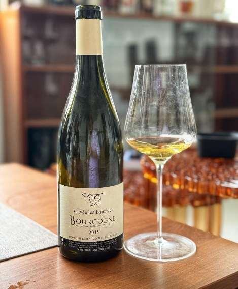
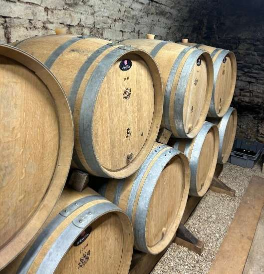
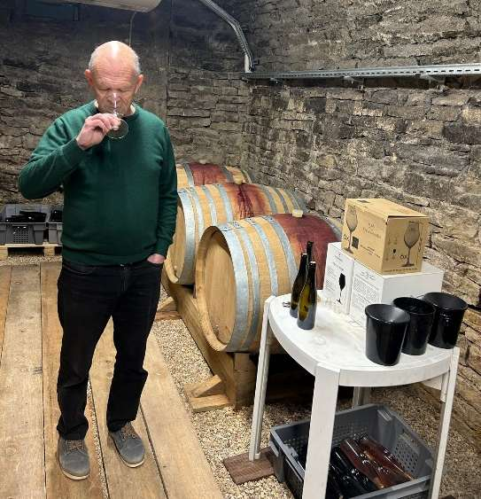
The iconic estate of Savigny-lès-Beaune. After the passing of Patrick Bize in 2013, his wife Chisa Bize (Japanese-born) maintained the domaine's high standards while adding her own touch. Deeply respectful of the environment, she tends her vineyards with care. In the cellar, sulfur is minimal and wines are aged in used barrels with a high percentage of whole-bunch. Chisa Bize's wines are pure, profound, ethereal and always refined — never heavy. Her Savigny-lès-Beaune remain unmissable benchmarks. Reds are vinified as whole clusters in large wooden vats, aged 1 year in old oak — supple, appealing, on sweet red fruits, spices and herbal hints. The whites are fleshy and satiny with generally tangy acids and a vibrant but textural profile.
One of Savigny-lès-Beaune’s most iconic estates, crafting wines of purity, balance and remarkable transparency to terroir.
| Cuvée | Tasting Note | Price |
|---|---|---|
| Savigny-lès-Beaune 2020White | Fresh and vibrant with lemon peel, green apple, crushed rocks and floral notes. Lovely tension, but still with good depth. Great energy. Really very enjoyable. | 83 |
| Savigny-lès-Beaune 1er Cru Aux Vergelesses 2020White | Pear, freshly baked bread, popcorn, orange oil and pastry cream. Layered and textural, with a rich but lively core; its satiny attack segues into an enveloping palate and a saline finish. | 131 |
| Savigny-lès-Beaune 1er Cru Fournaux 2018Red | Notes of cherries, berries and potpourri. Velvety and supple, built around powdery, youthfully chewy tannins that lend the wine more obvious structure than usual Bize. | 116 |
| Savigny-lès-Beaune 2020Red | A masterclass in stemmy Pinot Noir — exuberant yet precise, with funky, herbal purple/black fruits, lavender, black licorice and earthy, forest-floor notes. Great acidity, fresh, complex. | 83 |
| Bourgogne Les Perrières 2021Red | Lovely Bourgogne on a top plot above Savigny. Full of strawberry, rose petal, raspberry, peony. Smooth tannins, well-ripe berries and a touch of fresh minerality on the finish. So pleasant! | 74 |
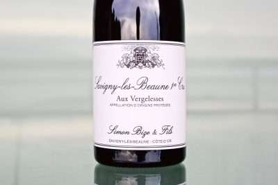
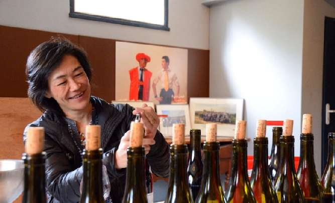
Irish-born Róisín boasts an impressive pedigree, having trained at top estates including Château Latour and Château Grillet, while earning both the Master of Wine and an MSc in Viticulture. Driven by a desire to make her own wines, she founded her micro-négoce, Maison Róisín Curley, in Burgundy. Her wines quickly gained attention in the UK, selling out within months. Despite her small production (~10,000 bottles/year), allocations are highly sought after. The wines reflect their maker: consistent, coherent and full of character. Subtle oak with a spicy lift adds aromatic charm. Lightly extracted but not lacking intensity, fresh and forward, they sparkle with vibrant phenolics — making 2023 a standout vintage.
As a Master of Wine, Roisin has an impressive palate — and her own wines reflect it. I love the way they combine an “infusion” style with structure and body, striking a perfect balance.
| Cuvée | Tasting Note | Price |
|---|---|---|
| Saint-Romain 2023White (Chardonnay) | Aged in used oak for 12 months. Fleshy with dry extracts — notes of lemon peel, almond and vanilla, lightly nutty, with a pleasant bready, yeasty lift. 876 bottles. | 92 |
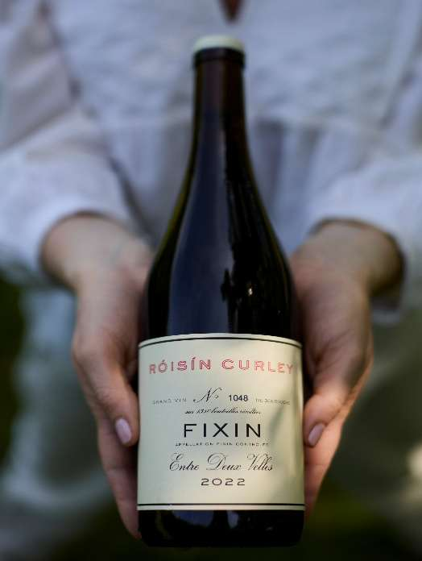
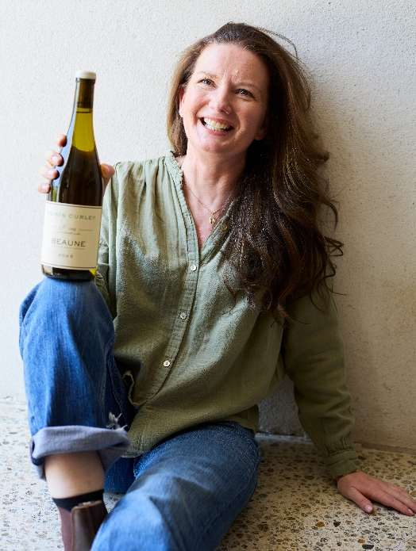
Guillaume Boin discovered wine during his sommelier training at La Tour d'Argent and then travelled the world refining his knowledge. He honed his winemaking skills in Europe (Vin Noe, Wasenhaus...) and New Zealand (Millton Vineyards) before settling in Burgundy, launching his first official vintage in 2024. 2025 marks his second vintage. Limited to 3,000 bottles, each cuvée is handcrafted. Reds are 100% whole cluster — fresh, crisp and full of vibrant red fruit with low alcohol. Minimal sulfur, minimal intervention, zero oak. Pure juices without artifice!
Tasted Guillaume's wines with no expectation and was impressed by the quality — free, natural juices but totally under control.
| Cuvée | Tasting Note | Price |
|---|---|---|
| Bourgogne Côte d'Or 2024Red (Pinot Noir) | A juicy and crispy Pinot Noir full of red berries, cranberry and red cherry. Soft tannins, low ABV. Highly drinkable! | 74 |
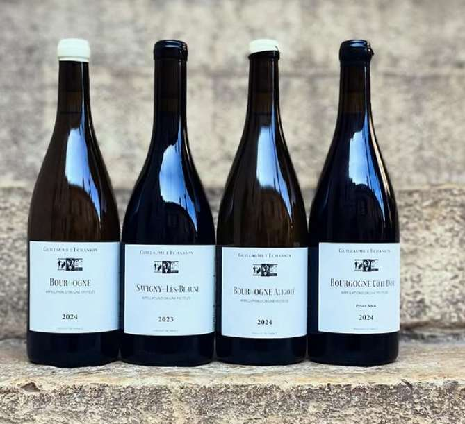
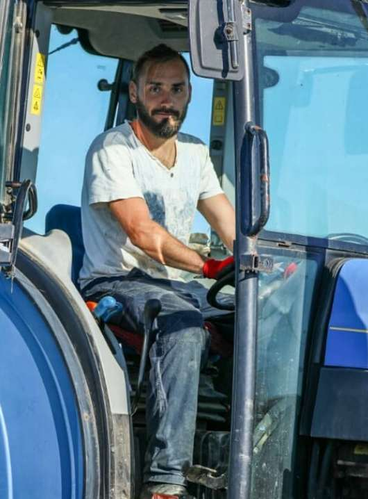
After crafting acclaimed wines at family estates Hermitage La Chapelle and Château La Lagune, Caroline Frey established herself in Burgundy in 2015 by acquiring Château Corton C. in Aloxe-Corton — a historic estate spanning 7.5 hectares of very old vines, including some monopoles. Despite limited volumes, she has invested heavily in quality, building a new winery in 2018 equipped with modern ovoid concrete tanks, temperature control, and a refined ageing regime combining oak (around 30% new) and Clayver (ceramic vessels). All wines are organic. The wines are consistently elegant, with finely integrated tannins, restrained oak, excellent balance and a seamless interplay of juicy red and black fruit. Classic in style, with extra finesse across this beautiful range of terroirs. The estate releases wines only when they are ready to drink — a rare policy today.
Struck by the consistency across the range and the evident care devoted to achieving high quality. The estate offers ready-to-drink vintages (like 2019) at a very fair price!
| Cuvée | Tasting Note | Price |
|---|---|---|
| Savigny Clos des Guettottes Monopole 2019Red | Ripe dark fruits meet fresh red berries in perfect harmony. A beauty at its best now. | 82 |
| Savigny Clos des Guettottes Monopole 2020Red | Delicate yet expressive for a blockbuster vintage — bursts with sour cherries and early earthy hints. | 82 |
| Aloxe-Corton 2020Red | Earthiness, smooth tannins and generous red fruit aromas — a modern expression of Aloxe. | 92 |
| Volnay 2019Red | Rich, precise aromas of blackberry and cherry wrapped in toasty notes. Well-balanced, full-bodied. | 99 |
| Volnay 2020Red | Red fruits, floral and silk shine here. Refined tannins, full-bodied, with a fresh, crave-worthy finish. | 99 |
| Pommard 2019Red | Violet aromas with black cherry, licorice and wet earth. From two sites, including a part of Rugiens. | 99 |
| Pommard 2020Red | Complex — blackberry, blueberry, redcurrant, cherry and ripe plum. Powerful palate with ripe tannins. | 99 |
| Auxey-Duresses 1er Cru Le Val 2019Red | Delicate florals and cherries on the nose, with a lively palate. Mid-palate lift, fine tannins, spicy elegant finish. | 99 |
| Auxey-Duresses 1er Cru Le Val 2020Red | Superb, complex wine with perfectly integrated oak over red and stone fruits — cherry, plum, raspberry. | 99 |
| Monthelie 1er Cru Champ Fulliot 2020Red | Deep, intense colour with an elegant, powerful nose of black fruits. Smooth, delicate palate — promising. | 105 |
| Aloxe-Corton 1er Cru Les Paulands 2019Red | Very fruity bouquet of blackcurrant, blackberry and cherry. Broad, complex palate with a touch of sweetness. | 129 |
| Aloxe-Corton 1er Cru Les Paulands 2020Red | Classic firmness in a long, lingering finish, gliding over the palate with ripe red fruits. | 129 |
| Aloxe-Corton 1er Cru Les Petites Lolières 2019Red | Floral aromas of iris and incense over dominant red fruits. Balanced palate of cranberry, raspberry, cloves. | 129 |
| Aloxe-Corton 1er Cru Les Petites Lolières 2020Red | Aromatic and flinty, with sour cherry and red rose notes. Focused, with minerality and impressive depth. | 129 |
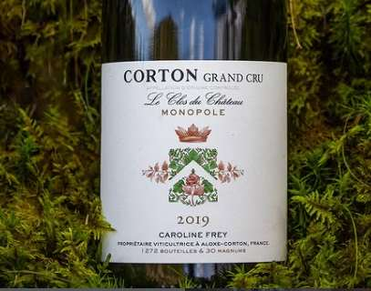
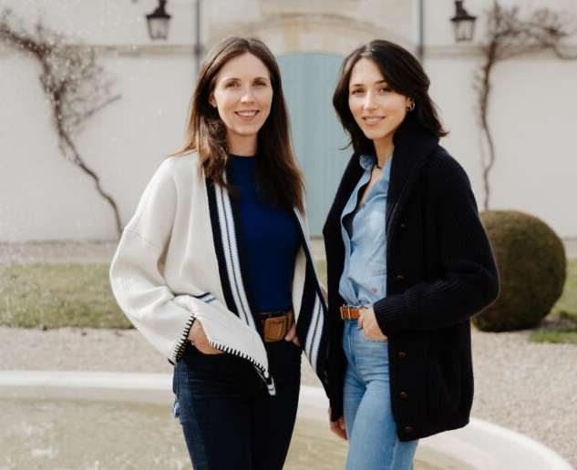
The story of this Chinese venture in Burgundy starts with a young Chinese entrepreneur — Flora Wang — setting up in Beaune after several experiences in the wine world. Production is small (10,000 bottles/year), sourced from very high-quality grapes from top plots. Defined as “smooth as silk,” the focus is on texture, with every element contributing to an effortless sense of balance. Winemaking follows a minimal-intervention philosophy with classic Burgundian technique (ageing in oak barrels, indigenous yeasts) and little extraction.
The Sémillon is very original and full of character, while the Burgundies are expressive, well-balanced and definitely worth exploring.
| Cuvée | Tasting Note | Price |
|---|---|---|
| Bourgogne Chardonnay 2022White (Chardonnay) | From 50-year-old vines in the Saint-Romain area, aged 12 months in oak (20% new). Pale gold with a hint of green. Fresh green apple and white flowers, subtle almond and brioche, finishing on stony, terroir-driven notes. | 72 |
| Larrouquey Sémillon 2023White (Sémillon) | From 80-year-old vines in Graves. Dry, long lees ageing in a mix of oak and amphorae. White flowers, acacia, lychee, pastry and toasted notes with fine reduction. Elegant, fragrant and seamless. Great surprise! | 78 |
| Bourgogne Pinot Noir 2023Red (Pinot Noir) | From Côte de Beaune, aged 16 months (10% new), indigenous yeasts, 20% whole cluster. Ruby-red with garnet highlights. Ripe berries, florals and earthy notes, soft tannins, subtle toasty finish. Very pleasant. | 82 |
| Beaune 1er Cru Clos des Mouches 2022Red (Pinot Noir) | Iconic plot for a stunning wine. Aged 12 months in oak, ripe fruit layers with subtle oak spice and cinnamon. Well-integrated tannins and lively acidity make this a gorgeous, silky and fragrant Clos des Mouches. | 170 |
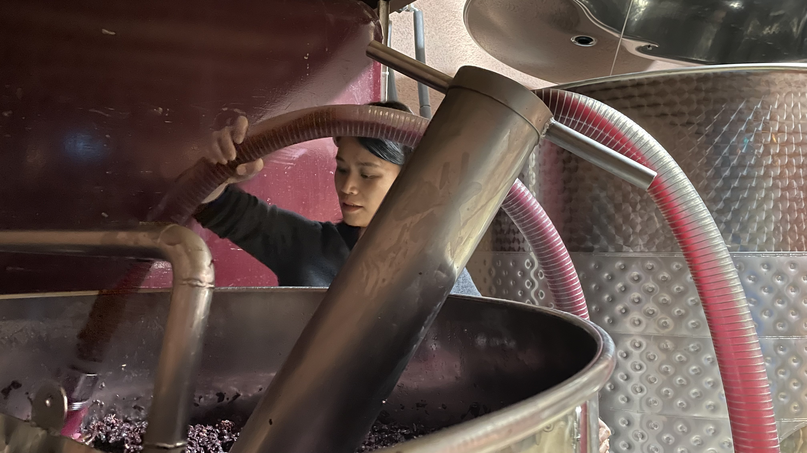
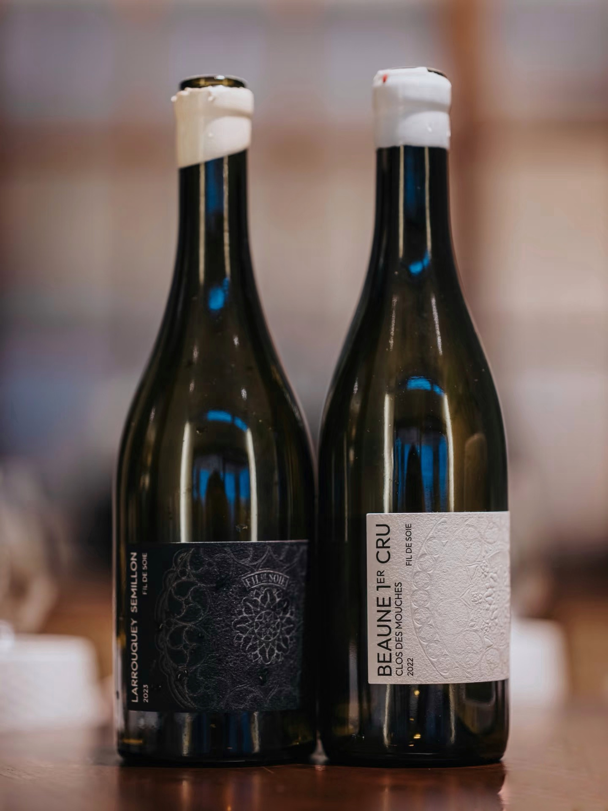
At just 24, Louis launches his first four Burgundian cuvées. A self-made talent with an unconventional path, he trained at Domaine Jacques Prieur and with Klaus-Peter Keller — where everything accelerated. His 2017 Bourgogne red “Les Nargilets” stunned in a blind tasting, earning KP Keller's respect and support. From a tiny family parcel in Côte Chalonnaise to his own Remigny-based négociant project (since 2024), Louis is now fully in motion. Style? Burgundy with a Kabinett mindset: no weight, all precision. Light extraction, gentle infusions, vibrant acidity — wines built on finesse, freshness and age-worthy elegance. Craft: old vines (30+ years), organic farming where possible, low yields, whole clusters, native ferments, no pigeage, short macerations (10–15 days), then 16 months in seasoned barrels (no new oak, from W. Kelley and KP Keller). Minimal sulphur, unfined, unfiltered.
Light-footed, aromatic, terroir-driven reds with real definition — precise, vibrant and seriously compelling. Silky texture, dangerously drinkable, with an utterly captivating perfume. Quantity very limited.
| Cuvée | Tasting Note | Price |
|---|---|---|
| Pink Aligoté 2024 (Vin de France)White | From Hautes-Côtes de Nuits. Skin contact, co-fermented with Pommard marc, aged in an old Keller Riesling barrel. A rosé in spirit — textural, structured, slightly reductive at first, then bursting with finesse and energy. Tangy, crisp, razor sharp: pomegranate, grapefruit, lime. Unique, natural, seriously convincing. | 85 |
| Fixin “Les Échalas” 2024Red | 100% whole cluster. NE-facing on red clay and blue marl. Fine spice, florals, textural, smooth tannins with a lovely core of sweet red and black fruits. Bright, elegant, juicy, ethereal. Totally different from classic Fixin. 11% ABV. | 116 |
| Pommard “Les Bœufs” 2024Red | 100% whole cluster. High-altitude, south-facing, clay-limestone. More filigree, less muscle. Juicy raspberry, lifted florals, hint of salinity. Pure class — standout. 11% ABV. | 129 |
| Beaune 1er Cru “Les Épenotes” 2024Red | 100% whole cluster. Just below Clos des Mouches. The most structured wine — more breadth, deeper violet perfume, yet still precise and vibrant. 11% ABV. | 135 |
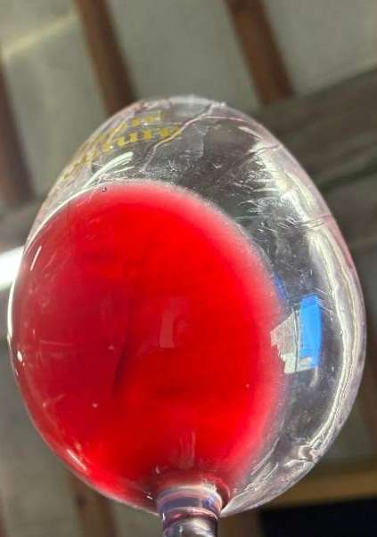
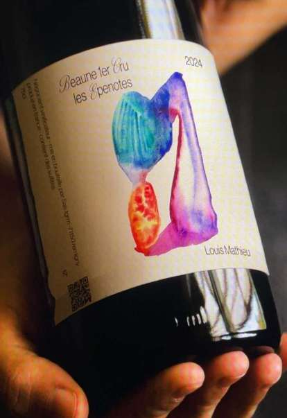
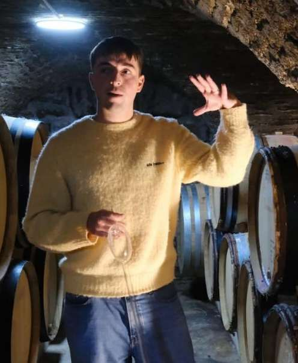
Founded in 2012, François Morente began with a radical move: a tiny Burgundy parcel to understand wine from the ground up. A former physics teacher turned meticulous grower, each bottle reflects that raw, uncompromising journey. A true micro-estate (3,500–4,000 bottles/year), driven by precision and organic farming. Just 0.36ha in Hautes-Côtes-de-Beaune, planted at 20,000 vines/ha from massal selections of Clos des Épenots — delivering energy, purity and depth. Vineyard work is extreme (horse ploughing, manual care). In the cellar: strict selection, partial whole cluster, 12 months barrel + 4 months tank, zero sulphur. Alongside, a tiny négociant range: organic Chardonnay from the Mâconnais and Grenache from the Gard. Same philosophy — no intrants, pure expression.
An uncompromising pursuit of quality, from ultra-high-density vineyards to meticulous cellar work, delivering wines of striking depth and character.
| Cuvée | Tasting Note | Price |
|---|---|---|
| Bourgogne Chardonnay 2023White | Sourced from the Mâconnais, already showing beautifully. A Jura edge: no heaviness, no warmth — just precision. A subtle touch of oak, then razor-sharp acidity, packed with energy, tension and nerve. Bright citrus (lemon, lime zest), greengage, green apple, with a hint of unripe tropical fruit. | 78 |
| Bourgogne Hautes-Côtes de Beaune 2023Red | From a high-density plot planted by François himself in the Hautes-Côtes de Beaune — a true Burgundy revelation. Dark cherry and blackberry leap from the nose. Whole-cluster fermentation reins in the ripeness, bringing a taut, finely balanced profile with subtle herbal lift. | 82 |
| Vin de France Grenache 2023Red | From grapes selected and vinified by François himself — a pure and gorgeous syrup of cranberry, raspberry, sweet spices and elderberry. No alcohol feeling (12% ABV), no sulfur… a true fruit juice! | 67 |
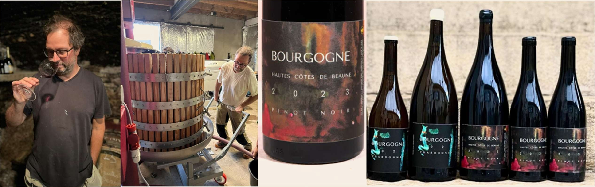
Patrick Johnston stumbled into winemaking at Maison Harbour in 2017 — and never left. His micro-négoce, Si Tu Sais, crafts crisp, lively, modern Burgundy wines. Production is tiny — just 25 barrels in 2023 — but every bottle shows purity, tension and delicate aromatics from a small manual vertical press and careful whole-bunch use. The name, meaning “if you know, you know,” nods to Burgundy's close-knit world. Already world-class, Patrick prioritises quality over quantity, refining a style destined for allocation-only recognition. Red wines show bursts of cherries, wild raspberries, cranberries and sweet plums — fragrant, delicate and silky, centred on ripe red fruits. Whites reveal stone fruits, lime, white flowers and lemon curd — approachable and charming, with no reductive or oaky influence.
Met Patrick before the hype, and even then his drive was obvious — dynamic, sharp and relentlessly hard-working, with a clear vision of the style he wanted to achieve. His wines are vibrant, full of energy, and never boring.
| Cuvée | Tasting Note | Price |
|---|---|---|
| Bourgogne Aligoté “Rimont” 2023White (Aligoté) | Floral notes of chamomile and dried petals with lime zest, green apple and guava. A round body cut nicely by a good level of acidity, with a textural finish. 900 bottles. | 83 |
| Bourgogne Chardonnay 2023White (Chardonnay) | Slightly more tropical, with guava and pineapple alongside light florals, ripe lemon, red apple, pastry, clove and a nice salinity. Refreshing acidity and a long finish. 575 bottles. | 97 |
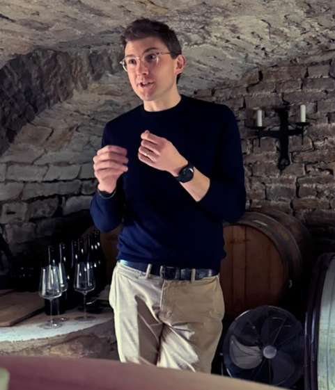
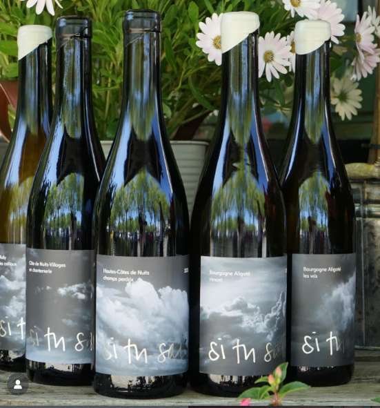
After working for the likes of Claire Naudin, Chanterêves and Cassiopée, Marie and Foulques founded their own estate, Sèves, in 2023. They work a single 0.63-hectare parcel, Les Cordères, in Bouzeron: a stony, north-west-facing site planted in 1981 at the top of the hill (380m). Bouzeron — the only Burgundy appellation dedicated solely to Aligoté — here delivers a complex, balanced wine from low-vigour vines rooted in clay-silt soils over white marl. Organic, little intervention, no sulfur during vinification, indigenous yeasts. Full fermentation and ageing in oak (228L and 400L) for 12 months, then 5 months in stainless steel. No fining, no filtering. Not a casual Aligoté!
A young, motivated couple tending their Aligoté plot like a garden, harvesting healthy grapes that give their wine a distinctive, expressive identity.
| Cuvée | Tasting Note | Price |
|---|---|---|
| Bourgogne Aligoté “Cordères” 2023White (Aligoté) | The hallmark salinity of Bouzeron meets the natural freshness of Aligoté. Fruity and fleshy on the nose, with pear, quince and lime, while the palate is pure and restrained, carried by white-flower aromas, stone fruits and a great pastry hint. | 71 |
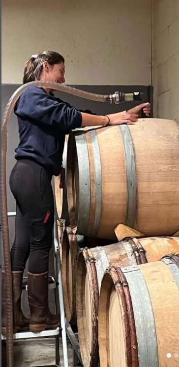
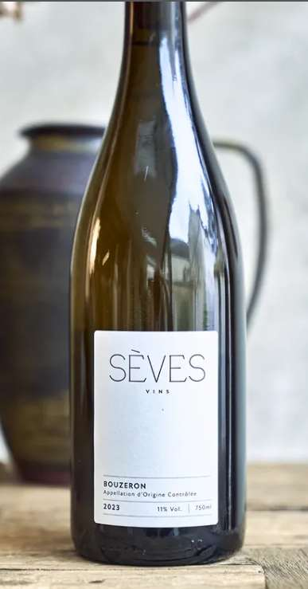
Sextant is a project launched in 2007 in Saint-Aubin by Carole and Julien Altaber, also the team behind Domaine Derain, a pioneer of natural wines in Burgundy. Sextant focuses on pure, natural wines: no sulfur, no additives, no new oak, minimal intervention, low ABV, unfined and unfiltered. Wild, expressive fruit with bright acidity and total authenticity. 100% organic grapes.
The wines are lively, wild and natural, free from artifice or “make-up.” Joyful and vibrant, they offer a refreshing, unconventional style — perfect for those seeking something original.
| Cuvée | Tasting Note | Price |
|---|---|---|
| Bourgogne 2023White (Chardonnay) | Pure and wild Chardonnay aged in oak foudres. Ripe and crispy on yellow apple, pear, lemon peel and quince. Natural, without faults. A joy to drink! | 58 |
| Rully 1er Cru 2022White (Chardonnay) | A 1er Cru plot, vinified naturally and aged 18 months in oak. Anything but classic Rully: bold, rounded, finely reductive on lees, almost no sulfur, with a clean, chiselled Jura-like expression and extra substance. | 88 |
| Vin de France “Intuition” Foudre 2018White (Chardonnay) | A real UFO. Sixty-year-old vines, four years in foudre: a vibrant, electric wine with tangy acids, gentle oxidative notes (nut, almond), ripe lime and stone fruit. Long, complex, Valette-like. | 90 |
| Bourgogne 2023Red (Pinot Noir) | Wild, funky Pinot Noir full of life and energy — red berries, pomegranate, cherry and a mineral finish. Yummy! | 58 |
| Monthelie 1er Cru Sur la Velle 2023Red (Pinot Noir) | Juicy cherry and raspberry with a hint of spice. From 60-year-old vines in Côte de Nuits — elegant, lightly oaked and ready to enjoy now. | 74 |
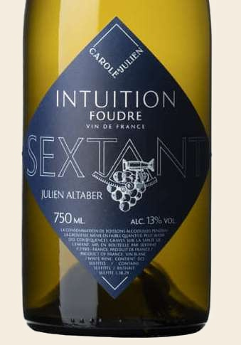
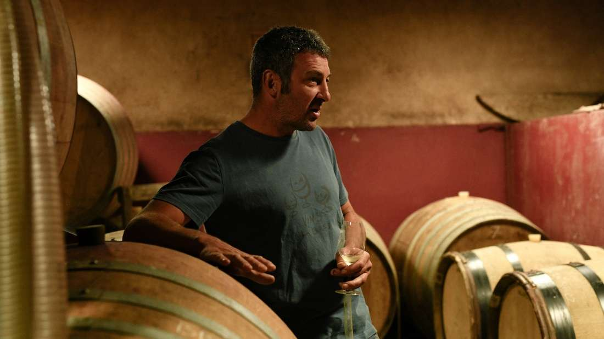
As a micro-négoce based in Beaune, Kei launched his first vintage in 2020 after a decade working at famous estates in Burgundy. Grapes are carefully sourced, usually from the same plots, and hand-harvested by his team, with rigorous sorting in both vineyard and winery. Reds are made with 100% whole clusters, undergo extended maceration and are aged for at least one year in oak with little sulfur; whites are also fully aged in oak. Reds are very aromatic — whole-cluster aromas of floral, ripe strawberry, peony, cola and sweet spices on smooth tannins. The whites are concentrated and intense, in a classic Côte de Beaune style.
Met Kei and became a close friend even before his first vintage. With no connections in Burgundy, he spent a decade working for other estates, patiently defining his style, then demonstrated exceptional resolve in creating his own venture — establishing a singular wine identity despite the obstacles of a deeply conservative region. Respect. Quantity very limited.
| Cuvée | Tasting Note | Price |
|---|---|---|
| Pommard Poisot 2023Red (Pinot Noir) | From old vines on a single plot. Always highly aromatic — Kei's benchmark cuvée. | 495 |
| Vin de France Cuvée Dame Hertz 2023White (Riesling) | Grapes selected by Kei in Alsace. 2023 is the final vintage for this cuvée. Aged in oak. | 220 |
| Puligny-Montrachet Corvée des Vignes 2023White (Chardonnay) | Single plot bordering Meursault. More on finesse and elegance. | 495 |
| Puligny-Montrachet 1er Cru Chalumeaux 2023White (Chardonnay) | From the top of the hill above Champ Canet. Needs time to deliver. | 760 |
| Corton-Charlemagne 2023White (Chardonnay) | Powerful, full-bodied, with new oak. Will benefit from ageing. | 1,315 |
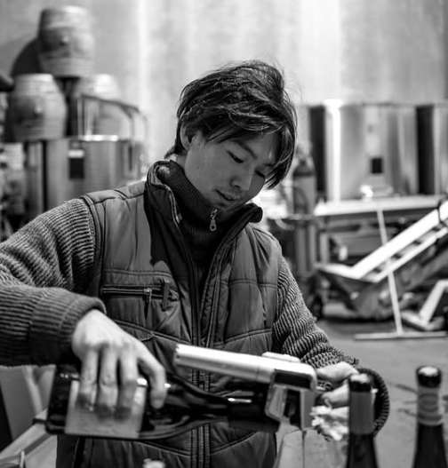
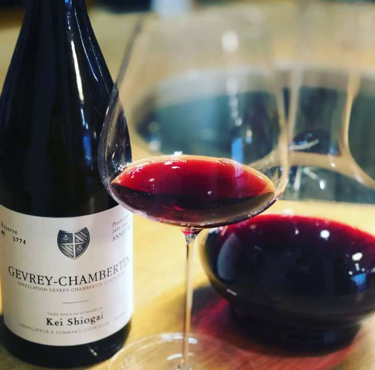
First of all, Isabel is the one who keeps you occupied the whole time with her idea of Drops and sharing wine like she's some kind of wine Robin Hood — equal parts chaos, fairness, and pure enthusiasm, through her successful project “Between Two Bottles.” But behind the fun is a very real craft story. Isabel sharpened her work at Maison Glandien and Les Jardins Vivants, learning wine the unglamorous way: in the vines, in the cellar, and under the pressure of harvest when every decision suddenly matters. Over the past three years she's been hands-on, building a deep, practical understanding of Burgundy precision — from pressing choices to élevage details and the patience it takes to let a wine become itself. In 2023 she took the leap and made her own wine with a fresh perspective: fruit-forward, vibrant and instantly charming, but still anchored in tradition and uncompromising quality.
That first vintage was an ultra-limited debut — just 800 bottles — not a “launch,” more like a personal statement. Quantity very limited.
| Cuvée | Tasting Note | Price |
|---|---|---|
| Bourgogne “Apprendre à Marcher” 2024Pinot Noir | Created from grapes of Mercurey La Leux (Maison Glandien), made by Isabel to deliver a vibrant and gorgeous infusion of Pinot Noir: fruit-forward, elegant and silky, with a well-tempered tannic grip and notes of red fruit, tea and sea breeze — only 11.5% ABV. Only 800 bottles produced but already impressive on its own identity. | 115 |
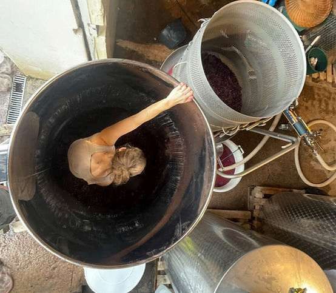
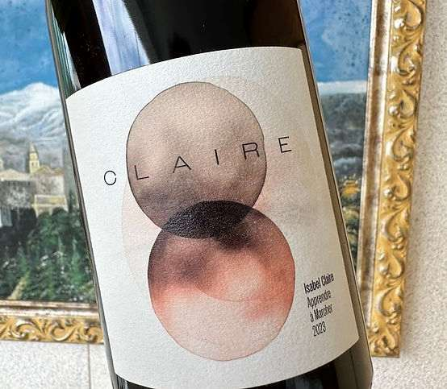
Domaine Modot-Guyon, led by sixth-generation Adrien Guyon (25yo), has revived its historic Chambolle-Musigny estate after nearly two decades of silence. The 4ha domaine produces wines from old vines with minimal intervention, organically managed (horse ploughing) and aged in oak. The wines are unfined, unfiltered and expressive without flashy tech or heavy-handed winemaking. Adrien's goal: ethereal, elegant wines with depth that express Chambolle-Musigny terroir. Superb value for price.
Despite owning highly prestigious plots, Adrien Guyon remains humble and down-to-earth, offering wines that deliver excellent value while steadily investing in quality.
| Cuvée | Tasting Note | Price |
|---|---|---|
| Bourgogne Pinot Noir 2023Red (Pinot Noir) | Juicy cherry and raspberry with a hint of spice. From 60-year-old vines in Côte de Nuits — elegant, lightly oaked and ready to enjoy now. | 56 |
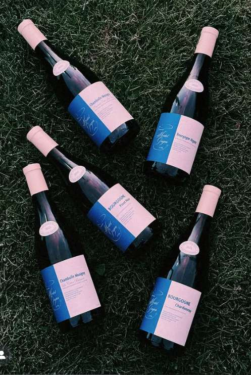
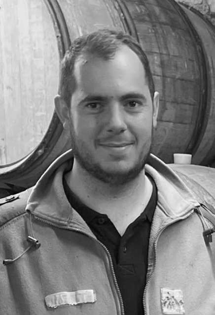
Sharing the same family's old-vine holdings as Robert Groffier but on a much smaller scale (3.65ha only), Domaine Peirazeau focuses on clean destemmed berries, gentle fermentation and minimal-intervention oak ageing. The wines reveal a bright red and black fruit profile, silky texture and ethereal balance — offering classic Côte de Nuits elegance and depth at an excellent value.
The wines here are always delivering in a classic style but worth the price — the kind of wine you are always happy to drink!
| Cuvée | Tasting Note | Price |
|---|---|---|
| Morey-Saint-Denis Blanc 2023White | 100% Chardonnay, 600 bottles/year. Aromas of hazelnut, honey, flowers and buttery pastry. Ample, satiny and approachable early. | 79 |
| BourgogneRed | Old vines bordering Morey-Saint-Denis. No oak used, minimal extraction, yielding pure, juicy red fruit, soft tannins and a mineral, ethereal grip — lively and highly drinkable. | 57 |
| Morey-Saint-Denis “Les Crais” 2023Red | Aged in oak. Aromas of blackberry, cherry, smoke and sweet berries. Fleshy palate with a slightly toasted finish. Top-quality wine for regular enjoyment. | 88 |
| Morey-Saint-Denis 1er Cru Genavrières 2023Red | Close to Monts Luisants, on poor soil. Elegant, taut, with dark fruit, supple tannins and a lively mineral finish. | 127 |
| Morey-Saint-Denis 1er Cru Chaffots 2023Red | Plot above Clos Saint-Denis Grand Cru. Deep, concentrated red fruit wrapped in fine-grain oak. Silky tannins, seamless length. | 127 |
| Chambolle-Musigny 1er Cru Haut Doix 2023Red | Mineral, concentrated and expressive — black raspberry, plum, spice and chocolate. Long, with powdery tannins and vibrant acids. | 181 |
| Clos de la Roche 2023Red | Powerful and dense, with sweet spices, cinnamon, cocoa and ripe red berries. The most aromatic Grand Cru of the range. | 267 |
| Clos Saint-Denis 2023Red | Fresh and silky, with sweet berries, plums, orange zest, spices and rose. Pure, precise and ethereal — the most floral of the Grand Cru range. | 267 |
| Charmes-Chambertin 2023Red | Already expressive with dark berries, cherries, orange zest and spices. Supple tannins and elegant profile — the most approachable of the Grand Cru range. | 310 |
| Bonnes-Mares 2023Red | Deep, full-bodied, layered — dark berries, licorice, toasted bread and peony. Long and penetrating finish; the most multi-layered of the Grand Cru range. | 353 |
| Chambertin Clos de Bèze 2023Red | Compact, dense and harmonious — dark berries, cherries, smoke, spices and forest floor, with lively acids and powdery tannins. The most powerful and concentrated of the Grand Cru range. | 417 |
Jérémy founded his own estate in 2019. He works naturally, with hand-sorted whole-cluster grapes, native yeasts, little extraction and very little sulfur, using different kinds of vessels for ageing — large oak barrels, amphorae and more. His wines reflect their terroir and vintage, with pure, vibrant aromas: refreshingly funky, crafted with precision.
Jérémy crafts his wines without artifice, working tirelessly in the vineyard to harvest pristine grapes that require minimal intervention. This direct, honest approach results in vibrant, lively wines full of energy.
| Cuvée | Tasting Note | Price |
|---|---|---|
| Bourgogne Aligoté 2024White (Aligoté) | A high-energy, natural-style Aligoté. Salty, citrusy and slightly wild — all about drinkability. 300 bottles. | 66 |
| Bourgogne Hautes-Côtes de Nuits 2024White (Chardonnay) | Bright and elegant, balancing vivid acidity with generous mid-palate fruit. Bold yet refined — stone fruits, lime, ginger, green apple. 886 bottles. | 75 |
| Saint-Véran 2024White (Chardonnay) | A wild interpretation of Saint-Véran — taut Chardonnay aged in amphora, bursting with lime, grapefruit and green apple. Sharp and vibrant. | 76 |
| Pouilly-Fuissé 1er Cru Clos Reyssier 2023White (Chardonnay) | Excellent density and ripeness, balanced by bright acidity. More volume than a classic Pouilly-Fuissé, far less sulfur. | 105 |
| Pouilly-Fuissé 1er Cru Clos Reyssier 2024White (Chardonnay) | A cooler vintage — more on salty, mineral notes compared to 2023. | 105 |
| Piémonte – Timorasso 2023White (Timorasso) | Made with the trendy “Timorasso” grape, aka white Barolo. Unique jasmine, lemon, pear and beeswax aromatics, with a salty, chalky backbone. Complex and expressive. | 84 |
| Piémonte – Timorasso 2024White (Timorasso) | Made with the trendy “Timorasso” grape, aka white Barolo. Unique jasmine, lemon, pear and beeswax aromatics, with a salty, chalky backbone. Complex and expressive. | 84 |
| Coteaux Bourguignons 2023Red (PN / Gamay) | From a plot bordering Vosne-Romanée. 50% whole-bunch Pinot Noir, 50% destemmed Gamay aged 11 months in 228L barrels. Great concentration for a Coteaux B. | 65 |
| Coteaux Bourguignons 2024Red (PN / Gamay) | A fresher vintage than 2023, more on a red fruit profile — taut and juicy. 593 bottles. | 65 |
| Bourgogne “Les Combes” 2024Red (Pinot Noir) | A confidential cuvée from a top plot bordering Vosne-Romanée. Satiny, juicy, whole-bunch profile with pure black fruit notes. Way above its rank — stunning. 714 bottles. | 88 |
| Bourgogne Hautes-Côtes de Nuits 2024Red (Pinot Noir) | Jérémy's flagship cuvée. Vibrant yet delicate, pairing bright acidity with a generous infusion of black fruit. Bold and expressive — always a yummy cuvée! | 75 |
| Savigny-lès-Beaune 1er Cru Les Lavières 2023Red (Pinot Noir) | 75% whole-bunch Pinot Noir, aged 11 months in 228L barrels. A refined and expressive red, brimming with cherry, raspberry and licorice. Silky on the palate with spices. | 141 |
| Savigny-lès-Beaune 1er Cru Les Lavières 2024Red (Pinot Noir) | A full infusion of red berries — cherry, raspberry, cranberry. Delicate and infused. | 141 |
Jintaro Yura stands apart in Alsace, crafting wines defined by purity, balance and originality. Working with organically grown grapes, his approach to white wines breaks from classic Alsatian tradition, favouring short, firm pressings, native yeast fermentations and ageing in a mix of oak, steel and clay. His Pinot Noir is equally distinctive, using a significant proportion of whole clusters vinified in an infusion style. The 2024 vintage marks his fourth release and, with the move to his own winery and facilities, his most accomplished to date. Inspired by Burgundian lees work and ageing, his wines show depth, freshness and a distinctive savory, umami-driven character — precise, pure and deeply expressive.
Jintaro is a close friend of Kei, so I had the chance to meet him before his first vintage. Above all, he is passionate about wine, and it shows in his own creations — wines that follow his unique style and vision, entirely outside Alsace norms.
| Cuvée | Tasting Note | Price |
|---|---|---|
| Alsace “L'Abeille et la Papillon” 2024White (Pinot Blanc) | Biodynamic grapes, more aromatic and sharper than classic Pinot Blanc — delicate white flowers, citrus, stone fruit, honey and white pepper. Fresh, silky and mineral-driven, with vibrant acidity and a creamy, long finish. | 65 |
| Alsace “Le Silence et la Résonance” 2024White (Riesling) | Aged 10 months on the lees in a mix of concrete, steel and wood, unfined, low sulfur. Vibrant and energetic, with succulent stone fruit, zesty citrus, peach-skin texture and fragrant florals. Precise, balanced, moderate alcohol (12.5%). | 70 |
Driven by freedom, Nicolas Barbou merges art and wine into one singular vision. After years in Burgundy alongside Jean-Yves Bizot, he returned to the Loire to create something entirely his own — precision shaped by Burgundy, guided by independence. Humble, sharp and deeply committed, he crafts wines as expressions of identity. Inspired by Aristotle — “Art and wine are the superior joys of the free man” — his approach is uncompromising. Vineyards are living ecosystems: biological farming, minimal intervention, constant observation. In the cellar: whole-bunch pressing, long élevage (20–36 months) in used barrels, no racking, minimal sulfur. Precision without artifice. Each parcel, each cuvée — its own voice, its own message. A young project, already highly sought-after.
These are not your typical Sauvignon Blancs. Nicolas Barbou crafts textured, terroir-driven wines that combine depth, freshness and remarkable personality.
| Cuvée | Tasting Note | Price |
|---|---|---|
| Folie Insolente 2023White | Just 1 hectare of 15-year-old Sauvignon Blanc on deep clay with sandy topsoils. Native fermentation in oak barrels (25% new Burgundy oak), aged 20 months with minimal sulfur. Trades power for finesse — an exotic nose of passion fruit, star anise, cedar and frangipane. Rich, textured palate with vibrant, mouthwatering bitters and long persistence. Already expressive. | 88 |
| Utopie Créative 2023White | 50-year-old Sauvignon Blanc on deep clay with coarse quartz sands. Native fermentation in old barrels (⅓ new Burgundy oak), aged 20 months, minimal sulfur. Just 2,500 bottles. Goes deeper than Folie Insolente with finesse and precision — fresh white fruit, soft spice, a touch of exotic and frangipane. Powerful yet perfectly balanced, with a long, saline finish. | 91 |
A discreet but highly sought-after name in the Northern Rhône, Domaine Marie & Pierre Bénetière has built a cult following since the early 2000s. Working a tiny 1.7-hectare estate in Côte-Rôtie, the domaine delivers wines of striking precision, depth and authenticity — firmly rooted in tradition and terroir. Set on steep, granite- and schist-rich slopes, the vineyards benefit from exceptional drainage and mineral tension. Native yeasts, minimal intervention; organic-minded farming, strict selection, hand-harvested fruit; whole cluster, native fermentations, mostly submerged cap, co-fermented with ~5% Viognier. Aged in oak (just 15% new), no racking, bottled unfined & unfiltered. Built to age, yet already compelling in youth.
A true insider's domaine — tiny production, meticulous work and unwavering standards. Their wines are increasingly hard to secure and highly prized by sommeliers and collectors alike. A hallmark of traditional Northern Rhône — a unicorn legend and a humble human. Quantity limited.
| Cuvée | Tasting Note | Price |
|---|---|---|
| Côte-Rôtie “Cordeloux” 2019Red | From its namesake lieu-dit in Côte-Rôtie — one of the very first parcels acquired in the 1980s — this cuvée captures the domaine's essence. The nose opens on delicate violet, layered with peppery spice and a subtle animal edge. The palate follows with precision, depth and character. | 172 |
| Côte-Rôtie “Cordeloux” 2019 — MagnumRed | Same wine as above in magnum format. | 364 |
Perched atop the Cornas amphitheatre, Domaine de la Grande Colline is one of the appellation's most striking sites — steep granite terraces, south-east facing, delivering Syrahs of tension, lift and raw energy. At the helm, Jonathan Jacquart brings both precision and instinct. His path reads like a masterclass: Emmanuel Reynaud at Château Rayas, Thierry Allemand, Hirotake Ooka and stints across Alsace, Jura, Languedoc and Burgundy (Domaine Dujac). When Hirotake Ooka returned to Japan, Thierry Allemand joined forces with Jonathan Jacquart to carry Grande Colline forward. Since 2018, Jonathan has sharpened precision and consistency, pushing a fully biodynamic, living-soil approach with no chemicals — just pure vineyard life. High-altitude Cornas brings freshness; in the cellar: whole cluster, gentle extraction, minimal sulfur and neutral oak (ex-Dujac) to let the site speak. Given the micro production of the Grande Colline cuvée (4 barrels a year), Jonathan also runs a small négociant activity — Bibendum (“Nunc est bibendum”) — bright, effortless wines made for pure drinking pleasure.
Biodynamic farming, whole-cluster fermentation and minimal intervention result in wines of exceptional purity and energy.
| Cuvée | Tasting Note | Price |
|---|---|---|
| Vin de France Bibendum Blanc 2022 (100% Clairette)White | Organic grapes from the Gard region. Crafted in the same spirit as the estate wines: indigenous yeasts with no additives except minimal SO₂. A softer, texture-driven style — low acidity, high drinkability (12% ABV). Juicy white peach, Asian pear, lemon, honeysuckle, white florals. | 61 |
| Vin de France Bibendum Blanc 2022 — MagnumWhite | Same cuvée as above in magnum format. | 132 |
| Vin de France Bibendum Rouge 2022 (100% Cinsault)Red | Hand harvested. Native yeast, fermented in stainless steel vats, whole cluster, extraction by pumping over. Aged in stainless steel. No inputs except minimal sulfur — 11.5% ABV. | 61 |
| Vin de France Bibendum Rouge 2022 — MagnumRed | Same cuvée as above in magnum format. | 132 |
| Vin de France Bibendum Rouge 2022 — JeroboamRed | Same cuvée as above in jeroboam format. | 279 |
| Vin de France Bibendum Rouge 2023 (100% Grenache)Red | 100% Grenache from organically farmed vineyards. Whole-cluster fermentation, native yeasts, minimal sulfur. A joyful, ultra-drinkable red offering crunchy red berries, wild herbs, flowers and sweet spices. Silky texture, vibrant freshness and a long mineral finish. | 61 |
| Vin de France Bibendum Rouge 2023 — MagnumRed | Same cuvée as above in magnum format. | 132 |
| Vin de France La Grande Colline Rouge 2021Red | Native yeast fermentation, whole clusters. Soft extraction (only pump-overs). 8 months élevage in used barrels from Dujac. Unfined, unfiltered with minimal sulfur used only at bottling. 4 barrels a year, 36 bottles allocated for Singapore. | 208 |
Henri Bonneau (1938–2016), 12th-generation vigneron, built a cult legacy from the 1950s. His father pioneered estate bottling in Châteauneuf-du-Pape in 1927, and Robert Parker later dubbed him the “Godfather of Châteauneuf-du-Pape.” The 6.5ha domaine is dominated by very old Grenache (~90%), with Mourvèdre, Counoise, Cinsault and Vaccarèse across 13 prime parcels (including top ones like La Crau and Grand Pierre). No recipes — only instinct, with final blends decided years later, just before bottling. Traditional to the core: low yields, late harvest, whole cluster, native fermentations in concrete, then 6–10 years' ageing in old foudres. No new oak, no filtration. The range is tight — Réserve des Célestins, Marie Beurrier, Cuvée Henri Bonneau, Les Rouliers — for a grand total of ~25,000 bottles/year. Since 2016 the estate continues seamlessly with family and Daniel Combin under the same philosophy and timeless greatness.
Pure, deep, iconic Châteauneuf-du-Pape. Cult.
| Cuvée | Tasting Note | Price |
|---|---|---|
| Les Rouliers Rouge (Vin de France) — BottleRed | From old Grenache with a touch of Cinsault in the Gard — a secret blend of two vintages. Rich and complex, opening on pepper, ripe plum and dark fruits, with a silky, velvety palate and fine tannins giving depth and length. Don't be fooled by its Vin de France status — blind, it rivals top Châteauneuf-du-Pape. | 115 |
| Les Rouliers Rouge (Vin de France) — MagnumRed | Same cuvée as above, magnum format. | 240 |
| Les Rouliers Rouge (Vin de France) — JeroboamRed | Same cuvée as above, jeroboam format. | 490 |
| Cuvée Henri Bonneau 2020Red | From the youngest vines (~25 years old, though!). Expect power, get pure drinkability. A seductive wine: plum, spice, eucalyptus and smoke on the nose. Silky tannins, fresh lift and a long, savoury finish with lingering dark berries and spice. Irresistible. | 214 |
| Cuvée Marie Beurrier 2018Red | Bonneau's more elegant wine, usually from clay, limestone and sandy soils. Beautifully textured, full-bodied, thick and unctuous, with soaring notes of kirsch, crushed flowers, garrigue, melted licorice and spice. Softer and rounder than the Célestins. | 259 |
| Cuvée Marie Beurrier 2019Red | As above — softer and rounder than the Célestins, with kirsch, crushed flowers, garrigue, melted licorice and spice. | 237 |
| Cuvée Marie Beurrier 2020Red | As above — softer and rounder than the Célestins, with kirsch, crushed flowers, garrigue, melted licorice and spice. | 237 |
| Cuvée Réserve des Célestins 2018Red | From 80–100-year-old Grenache vines. A clear step up — dense, deep and richly layered. Bursting with sweet kirsch and cherry, lifted by garrigue and pepper. Polished, silky tannins and impressive concentration. | 360 |
| Cuvée Réserve des Célestins 2019Red | From 80–100-year-old Grenache vines — dense, deep and richly layered, with sweet kirsch, cherry, garrigue and pepper. | 345 |
| Cuvée Réserve des Célestins 2020Red | From 80–100-year-old Grenache vines — dense, deep and richly layered, with sweet kirsch, cherry, garrigue and pepper. | 345 |
Nestled at the foot of Mont Ventoux (Southern Rhône), Domaine de Faverand spans 5 hectares of old vines (Grenache, Carignan) on sandy, clay-limestone soils, giving the wines remarkable finesse. Taken over in 2020 by the former agent of Château Rayas, part of the vineyard has been converted to agroforestry, boosting biodiversity and soil balance. In just its second vintage, the estate asserts its identity through natural winemaking: spontaneous fermentations, no additives and gentle remontage, producing wines that are concentrated yet balanced. The style is aromatic, with velvety tannins and juicy Grenache — jammy, garrigue-style wines reminiscent of Reynaud (Rayas and Tours): olives, cherry, raspberry jam, violet, thyme and orange peel.
Because the wines are reminiscent of Reynaud's style: aromatic, intense, with silky tannins and an addictive perfume.
| Cuvée | Tasting Note | Price |
|---|---|---|
| Domaine de Faverand Blanc “Calourasso” 2024White | A blend of southern grapes. Crisp yellow fruits, fennel and candied citrus meet a fresh, briny energy on the palate. Silky, luminous, dry, with a hint of garrigue herbs — a vibrant, sun-drenched white that never feels heavy (12% ABV). | 58 |
| Domaine de Faverand Réserve 2022Red (Old Grenache) | The benchmark of Faverand: beautiful aromatic intensity, with notes of ripe red fruit, spice, violet, cured meat and licorice. Highly perfumed, jammy, silky tannins... Reynaud style! | 60 |
| Domaine de Faverand Old Vines 2022Red (Grenache / Carignan) | A symphony of balance: ripe dark fruits, freshness and structure, but nothing heavy here. Pure, vibrant and perfumed with a natural kick. A wine that smells of garrigue and speaks of an authentic, unvarnished South. | 64 |
| Domaine de Faverand Cariñena 2022Red (Carignan) | An impressive wine, great acidity with crispy red fruits balancing sweet flavours of black olives, black cherry, sweet plum, violet, garrigue and sweet spices. Fragrant, fresh, captivating... Domaine des Tours style! | 72 |
Here is a selection of the rarest and most sought-after wines from the Languedoc. Great Southern wines, without the clichés of the South — that's what links these wines from Oratoire St Jean d'Aureilhan, Bergerie de l'Arcade and Maxime Renaudin, all of which have a direct link with the Vaillé family of Grange des Pères. For Languedoc enthusiasts, these niche domaines are worth exploring: small productions, sensational wines, great young yet with huge ageing potential.
| Cuvée | Tasting Note | Price |
|---|---|---|
| Oratoire St Jean d'Aureilhan 2022Red | 6ha in the heart of the Languedoc, tended by Franck Soulayrol, nephew of the Vaillé family (Grange des Pères). 2022 is his second vintage only — a blend of 50% Mourvèdre, 30% Syrah, 20% Sangiovese, aged two years in oak barrels. Striking depth and aromatic complexity: red berries, jam, sweet spices, violet, liquorice, garrigue. Velvety and generous, balancing power and freshness with a long, elegant finish. No heat, pure lush wine. | 130 |
| Maxime Renaudin — Carignan 2021Red | A meteoric rise and a new language for the Languedoc. Founded in 2018, Maxime's 5ha vineyard benefits from the mentorship of the Vaillé family (Grange des Pères): gentle winemaking, minimal sulfur, long élevage. Fresh, vibrant wines with body but never heaviness. This cuvée is 100% Carignan — full of spice, liquorice and black fruits on a silky texture. | 140 |
| Maxime Renaudin — Pays d'Hérault 2022Red | Maxime's flagship — a blend of Grenache, Syrah and Mourvèdre, aged 2 years in used Grange des Pères barrels. Silky on the palate, with free-flowing aromatics of red fruits, dried herbs and gentle spices — southern intensity without heaviness, with a texture reminiscent of Pinot Noir but deep, vibrant Languedoc character. | 140 |
| Bergerie de l'Arcade — Languedoc 2021Red | Founded in 2016 by the Soulas brothers on a vineyard guided by Laurent Vaillé of Grange des Pères, who mentored them from the very first vines and even vinified the inaugural vintage. This 2021, a blend of Grenache, Syrah and a touch of Mourvèdre, is pure velvet: complex aromatics of ripe fruits, crushed strawberry, garrigue and subtle smoky notes. Warm, savoury, with a long, refined finish. | 130 |
| Bergerie de l'Arcade — Languedoc 2022Red | Ripe aromas of sugared strawberry and wild raspberry, layered with floral and spicy notes. Long élevage has sculpted the palate, with a refined, slightly herbaceous finish — distinct from Grange des Pères yet carrying the same grace and sensuality. | 130 |
| Grange des Pères Rouge 2018Red | A cult estate that needs no introduction — a stunning blend of 40% Syrah, 30% Mourvèdre, 20% Cabernet Sauvignon, 10% Counoise, 24 months in barrel. Aromas of violet, blackberry, blueberry, green bell pepper, tomato leaf, thyme, bay, black pepper, licorice, graphite, vanilla, dark chocolate, coffee, leather and sweet tobacco. Dry with tangy acidity, fine-grained tannins, full-bodied, with a long, elegant finish. | 290 |
| Grange des Pères Rouge 2022Red | Even more concentrated than the 2018, with an intense yet refined nose of blackberry, black cherry, violet, garrigue, licorice and graphite. Full-bodied but remarkably fresh and precise, with silky texture, fine tannins and no excess weight or heat. Long, savoury finish — classic Grange des Pères, power with finesse, built to age. | 270 |
Château Bel Air Marquis d'Aligre (BAMA for purists) is a Margaux like no other. Crafted by 93-year-old Jean-Pierre Boyer, a true “extra-terrestrial,” ignoring trends and making wine his own way. From very old vines (some pre-phylloxera), the vineyard sits on the great Virefougasse terroir (Château Margaux also holds plots here). BAMA is always a single wine, blending fluctuating percentages of Cabernet Sauvignon, Merlot, Cabernet Franc, Petit Verdot and ancient native Bordeaux grapes — no second wines, no make-up. Winemaking is equally unorthodox: no oak, slow natural fermentation, minimal intervention, and three years in concrete vats. Only made in the best years, each vintage defies time. BAMA evokes a vanishing era of Bordeaux: light in colour, low in body, yet extraordinarily refined, perfumed and velvety. Complexity triumphs over concentration, with a sappy, persistent finish that demands another sip. Thanks to the kindness of Mr Boyer, all of the wines below come directly from him, released just a few weeks ago.
Bama is truly one-of-a-kind, a complete UFO in Bordeaux — and arguably in the entire wine world. It's the only Bordeaux I could drink every day!
| Vintage | Tasting Note | Price |
|---|---|---|
| 2018 | Still a baby — restrained, compact, on deep black cherry, blueberry and plum. Strong potential to deliver all the BAMA magic in a couple of years. | 100 |
| 2016 | Fresh, pure, vibrant red fruit, free of any oak — sappy and full of tension on the finish. | 100 |
| 2015 | Fantastic vintage. Fresh wild strawberry and cranberry lifted by floral, minty, saline notes. Elegant and vibrant, with silky tannins and a long, refined finish. | 100 |
| 2014 | Surprisingly deep for this vintage — smooth tannins, red berries, blueberry, Asian spices and cranberry. Lively and lovely! | 100 |
| 2013 | Open from the first pour — fine, racy, quietly dense, with pure fruit untouched by oak. | 100 |
| 2012 | Ripe blackberries, raspberries, plums and sweet spices. Silky texture, mineral lift — true BAMA spirit with a Burgundian finish of leather and fresh mushroom. | 100 |
| 2011 | Refined, silky and elegant, with striking acidity built to age for decades. Plum, dark cherry and blueberry layered with tobacco, leather and oak. | 100 |
| 2010 | Blue and black fruits, savoury earth, clove-tinged tannins. Quietly complex with refined tertiary notes — blind, you might never guess Bordeaux. | 105 |
| 2009 | Pure, captivating bouquet of cranberry, wild strawberry, mint and iodine. Medium-bodied, vibrant, with a fine acid line and a poised, energetic finish. | 105 |
| 2005 | Tobacco and graphite nose over black fruit. Medium-bodied and crisp, with fine tannins, a precise acid line and a clove-spiced finish. Dense yet refined. | 105 |
| 1998 | Singing today, far younger than its age. Juicy, silky, with blackcurrant, raspberry, bay leaf, umami and iron notes. Beautifully balanced Burgundian elegance. | 105 |
| 1996 | Drinking beautifully — plum and cassis with fresh tobacco, gentle spice and sweet earth. Velvety, pure, melting tannins, entering a long plateau of maturity. | 105 |
| 1989 | Amazingly fresh for such an old wine. Smooth, complex and delicate with a great finish — cherry, plum, leather, orange, spices. A special wine. | 250 |
| 1986 | Tobacco and sous-bois, St-Julien in style. Masculine, taut structure with a core of black fruit. Saline notes and lingering black pepper — uncompromising but fascinating. | 250 |
| 1970 | Dried red fruit, cassis, pencil shavings, violets and cigar ash. Supple, concentrated, with lovely depth, melted tannins and pitch-perfect balance. | 250 |
Toru Oikawa, born in 1981, moved to Italy in 2014, where he began working for the legendary Gianfranco Soldera at Case Basse, learning artisanal, minimal-intervention methods. In 2020 he finally found the right vineyards to launch his own project — giving birth to Il Vignaiolo di Toru Oikawa on just one hectare in Chianti. His approach is pure and uncompromising: organic farming, spontaneous fermentations, minimal intervention, old oak, no fining, no filtration. Tiny production, singular vision. Tuscany's new unicorn has arrived: a confidential release of just 2,000 bottles — a wine of singular style, deep intensity, soaring aromatics and seamlessly integrated tannins, with remarkable freshness and zero heat. While all wines are produced within Chianti Classico, they are labelled Toscana IGT — inspired by Soldera and, above all, to give Toru complete freedom in grape varieties and methods.
The first time I tasted Luna it was blind, and I was stunned by the intensity and depth of the wine without feeling any heavy tannins — convinced the winemaker was very skilful and making his own style. The right criteria to jump on it!
| Cuvée | Tasting Note | Price |
|---|---|---|
| Luna Sangiovese 2022 (IGT Toscana)Red (Sangiovese) | From a prime Chianti Classico site. Racy tannins frame dark fruit, spice, violet and liquorice, with striking density and endless persistence. Powerful yet seamless, never hot. Can easily find Soldera influence. Built to age. 1,250 bottles. | 139 |
Kissinger first caught collectors' attention when Klaus Peter Keller praised his Chardonnay. Since then, his scarce releases (Chardonnay, Sauvignon Blanc, Weissburgunder and Riesling from limestone-rich Rheinhessen) have become a phenomenon. Fourth-generation, Moritz Kissinger is only the second to bottle estate wines, farming ~7ha in Uelversheim with his wife Jasmin. Driven by purity and energy, their wines bring a Burgundian-like precision to Rheinhessen while boldly celebrating terroir and minimal intervention. As Tomoko Kuriyama (Chanterêves) notes: “soul, warmth and effortless elegance.” Part of a new wave redefining Germany, Kissinger crafts terroir-driven, minimal-intervention wines with energy and precision.
Old soils, new generation. Moritz Kissinger is crafting some of Germany's most vibrant and terroir-transparent wines today.
| Cuvée | Tasting Note | Price |
|---|---|---|
| Deutscher Winzersekt Nr. 4Sparkling | A 1/3 blend of Chardonnay, Pinot Noir and Pinot Blanc, from the 2023 vintage blended with a touch of solera. Fine layers of citrus and stone fruit driven by mineral tension and subtle herbal notes. Precision meets airy lift — Champagne in finesse, yet distinctly pure German sparkling. | 68 |
| 0 Ohm 2024 (White)White | 50/50 Pinot Blanc & Chardonnay with short maceration: saline, wax, citrus, lemon pith — precise, not “orange” wine, closer in spirit to Jura (between oxidative and reduction) with a touch of wood. From cool, limestone soils, breaking the Rheinhessen mould. | 58 |
| 0 Ohm 2024 (Red)Red | 100% Pinot Noir, terroir-driven with subtle smoke and earthy lift. Smooth tannins, bright acidity and fine texture. Red currant, cranberry, raspberry — fresh, restrained, never overripe. Outstanding value, seriously fun & delicious. | 59 |
| Chardonnay 2023White | Flinty, reductive on the nose, opening into apple skin, orange zest and subtle leesy, bready notes. Two winters' ageing make it precise, layered and energetic — a Burgundy comparison is justified, yet this clearly speaks of Rheinhessen. | 93 |
| Nierstein Hipping Riesling Kabinett 2024White | From the famed Hipping plot. Cool, focused, highly elegant style. Precision, freshness and a pure, linear structure. Citrus-driven, vibrant, mineral, light on its feet yet full of energy. Ripe fruit meets herbal lift, with impressive depth. | 73 |
| Nierstein Pettenthal Riesling Kabinett 2024White | A top Kabinett from the famous Pettenthal plot. Light yet structured — saline, precise, electric. Lime, white peach, wet stone, subtle smoke. Juicy, zesty, long mineral finish. Playful, serious, dangerously drinkable. | 73 |
| Kreuz Riesling Trocken 2024White | Kreuz terroir stands apart — south of the Roter Hang, with Rhine views on limestone and loess soils, not red slate. Vibrant on the palate, with impressive drive and a long, mineral finish. Pure, layered, deep and compelling. | 90 |
“The Coche-Dury of Ingelheim.” Bold, slightly tongue-in-cheek but grounded in reality: density, depth and ambition with striking precision and clarity. Carsten Saalwächter, leading this nearly 200-year-old estate, embodies the new Rheinhessen — rooted in tradition, shaped by Burgundy. From 8ha of limestone, wind-swept vineyards in Ingelheim, he crafts Silvaner, Chardonnay and Pinots, with a rare focus on Silvaner. Slate soils across the Rhine add another layer of expression. Burgundy-inspired but fully his own: long pressings, oxidative handling, slow fermentations, extended élevage, whole-cluster for reds. The result: Burgundian texture meets German tension, with wines of depth, energy and precision.
German precision meets Burgundian finesse. Carsten Saalwächter's old-vine wines capture the purity, texture and energy of Ingelheim's limestone terroirs.
| Cuvée | Tasting Note | Price |
|---|---|---|
| Silvaner Alte Reben Trocken 2023White | Old vines (50 years) from limestone soil. Just 11.5% ABV — a razor-sharp wine Carsten calls his “drinking water”: ultra-refreshing but with real edge. Raw, intense, smoky, herbal, pine, saline with gripping acidity. Citrus sits behind a firm, phenolic backbone. A unique Silvaner. | 65 |
| Weisser Burgunder Trocken 2023White | Raised on full lees in traditional 600L oak casks, building texture and quiet complexity. Yellow apple, quince, stone fruit, herbs and subtle lees. Silky texture, fresh acidity, long saline finish. | 73 |
| Chardonnay Trocken 2023White | Orchard fruit, citrus lift, brioche and toasted nuts over cool mineral tension; silky texture, vibrant acidity, discreet oak, long saline finish. Top fruit, gentle pressing, partial skin contact, aged 18 months on full lees in 600L oak (⅓ new) — when Burgundy meets Rheinhessen. | 92 |
| Chardonnay –R– Trocken 2022White | A special bottling from the best plot (80-year-old vines), aged 30 months on fine lees in Burgundy oak barrel. Amazing balance of density, reduction and sharp acidity. Wow! | 128 |
| Spätburgunder Alte Reben Trocken 2023Red | Pinot Noir from the oldest vines — lean sandstone soils, low yields. Aged 24 months in used barrels. Elegant, vibrant, fine-grained. Red fruit, lifted herbal notes. | 76 |
Manuel Cantalapiedra (37yo) leads the new wave of Verdejo, cutting through industrial Rueda (North-West Spain) to reveal the raw, mineral soul of the Castilian plateau. Based in La Seca with roots back to the 19th century, the turning point came in 2014 when Manuel began bottling his own wines. Today he farms ~20ha (organic, biodynamic practices) centred on old-vine Verdejo, including rare pre-phylloxera and ungrafted parcels. Dry farming, late harvests, precision. In the cellar: native fermentations, ageing in tank or used oak, minimal sulfur, unfined & unfiltered. The wines are pure, vibrant and deeply terroir-driven — a radical Verdejo: raw, saline, reductive, alive.
Forget classic Spanish whites — this is something else. Structure of white Burgundy, freshness of great Chenin, minerality of the Jura. High energy, yet refined and noble, among the most sought-after Spanish whites today.
| Cuvée | Tasting Note | Price |
|---|---|---|
| Majuelo El Espejo 2023White | 100% Verdejo (planted 1999). High-altitude (750m), NW-facing marl-limestone delivering precision, freshness and a sharp saline edge. Native ferment in French oak, 23 months ageing, minimal sulfur. A chiselled, mineral, slightly reductive wine — vibrant, energetic. | 83 |
| Majuelo La Otea 2023White | 150-year-old Verdejo vines (planted before phylloxera, ungrafted). Aged 2 years in 600L Burgundy barrels. Pear, lees, baked bread, popcorn, orange oil and pastry cream on a sharp minerality. Layered and textural, with a rich but lively core; satiny attack segues into an enveloping palate and a saline finish. Impressive! | 125 |
| Obertura 2023White | A special cuvée driven by total freedom, aged 21 months with almost no sulfur added — produced in tiny quantities. From ungrafted Verdejo vines, anything but classic. Vibrant, deep, electrifying — a Verdejo that truly captivates. | 88 |